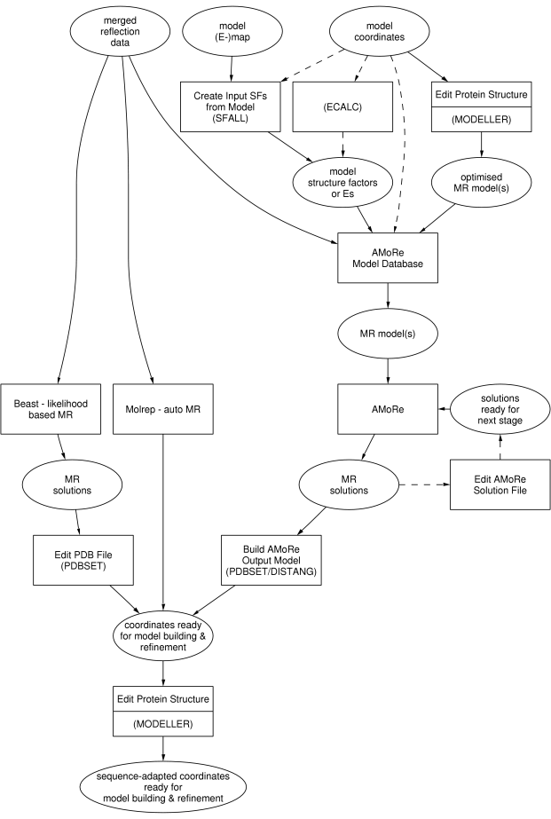

|
CCP4 Roadmaps |
| MOLECULAR REPLACEMENT |
MOLECULAR REPLACEMENT AND PRECEDING DATA ANALYSIS
Before attempting structure determination through molecular replacement, it would be
wise to analyse the data in various ways:

The plain rectangular boxes represent
tasks as in the
CCP4 Graphical User Interface, the steps to take for molecular replacement.
Stippled rectangular boxes represent external programs. 'Edit PDB File' is not part of the
Molecular Replacement module in the
Interface; it is part of the
Coordinate Utilities module.
The ellipsoids represent the input and output to and from the various tasks.
Auxiliary CCP4 programs used in these tasks
- ALMN
- Calculate rotation function overlap values using FFT techniques
- DISTANG
- Distances and angles calculation
- ECALC
- Calculate normalised structure amplitudes
- FFT (Patterson)
- Check native Patterson map for large peaks which indicate pseudo-translation
- GETAX
- Real space correlation search / NCS translation search
- MAPSIG
- Print statistics on signal/noise for translation function map
- PDBSET
- Various useful manipulations on coordinate files
- POLARRFN
- Fast rotation function which works in polar angles
- RFCORR
- Analysis of correlations between cross- and self-Rotation functions
- ROTMAT
- Interconverts CCP4/MERLOT/X-plor rotation angles
- RSEARCH
- R-factor and correlation coefficient between Fcalc and Fobs
- STNET
- Generate stereographic net plot for use with POLARRFN
- TFFC
- Translation Function Fourier Coefficients
Other non-CCP4 programs
- COMO
- Locked rotation and translation functions
- CNS
- Patterson correlation method in molecular replacement
- EPMR
- Molecular replacement using genetic algorithms/evolutionary programming
- For documentation, check
EPMR CCP14 mirror
- Queen of Spades
- A stochastic approach to molecular replacement
Further reading
CCP4i Documentation on Molecular Replacement

Molecular Replacement
Tutorial (I. Tickle)
CCP4 Program Documentation